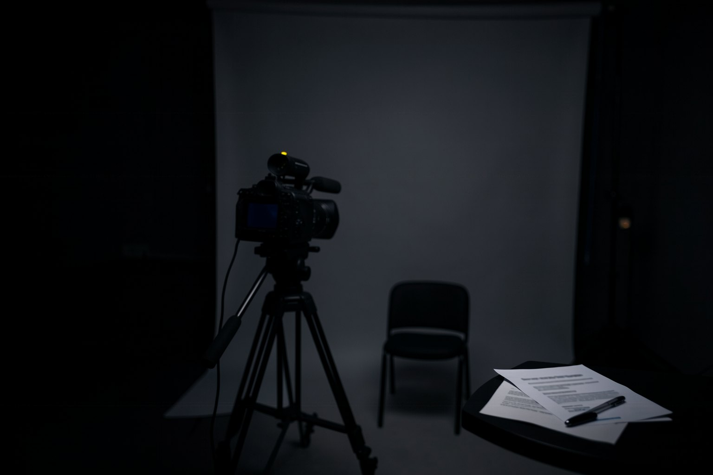

E1 · Conferidor
5 minRode "conferir o termo".
Pronto quando: OK: termo de Ana Exemplo · 7 campos · válido até 31/12/2027 com saída: 0, e FALTA: Rótulo com saída: 1.
Aula 7 · 14 min
Avatar falante é o passo mais caro da fábrica e o mais sensível: é o rosto e a voz de uma pessoa. Nesta aula você entende como o estúdio entra no pipeline e escreve duas peças suas: o termo de uso do avatar e um portão que não deixa nenhuma geração começar sem termo válido.
Começar a aula
Objetivo: escrever o termo de uso do seu avatar e pôr um portão que fecha qualquer geração sem termo válido.
Clique em cada etapa. O estúdio só abre depois do portão.
O explicavideos e o refazvideo pedem o arquivo APROVADO_HEYGEN antes do start, mas o código não confere. O portão desta aula é o que fecha de verdade.
Exemplo datado: nomes e recursos mudam. O que não muda é o termo.
Avatar V, apresentado em abr/2026: identidade criada a partir de uns 15 s de gravação, separando identidade de aparência; em mai/2026, direção de movimento em linguagem natural (pesquisa §3). É o estúdio que os motores do INEMA usam, pela assinatura.
Synthesia Express-2 (set/2025, corpo inteiro). Hedra Omnia e OmniHuman 1.5 aparecem em fontes secundárias: relatados, não confirmados em fonte oficial em 19/10/2026.
Nos geradores com áudio nativo, a boca sai junto com a fala. Nos avatares, o estúdio sincroniza a partir do áudio ou do texto. Geradores e áudio nativo: curso 1.
Rótulo de conteúdo gerado por IA, direito de imagem e voz e o AI Act são do curso 2, aula 7. Aqui o termo só exige que o rótulo exista e cite IA.
Exemplo fictício no kit. O seu é igual, com os seus dados.
# Termo de uso de avatar e voz (exemplo fictício) Pessoa: Ana Exemplo Autoriza: a própria Ana, dona do canal, autoriza avatar com o rosto dela e a voz clonada dela Uso: vídeos dos cursos gratuitos do canal dela e cortes desses vídeos Idiomas: português, inglês e espanhol Validade: 31/12/2027 Revogação: pedido por escrito; vídeos novos param no mesmo dia, os publicados saem em até 30 dias Rótulo: "Avatar e voz gerados por IA com autorização de Ana Exemplo" no canto do vídeo e na descrição
K=~/projetos/formacao-cinema-ia-fabrica-v72/kit python3 "$K/conferir-consentimento.py" "$K/exemplos/a7-termo/termo.md"; echo "saída: $?" python3 "$K/conferir-consentimento.py" "$K/exemplos/a7-termo/termo-sem-rotulo.md"; echo "saída: $?"
OK: termo de Ana Exemplo · 7 campos · válido até 31/12/2027 saída: 0 FALTA: Rótulo saída: 1
O segundo arquivo é o mesmo termo sem a linha Rótulo. Os rótulos dos campos também valem em inglês e espanhol (Person, Label, Etiqueta…).
O script não chama estúdio nenhum: só decide se você pode abrir o estúdio e quantos segundos vai pedir.
#!/usr/bin/env bash
# portao-avatar.sh — porta de entrada de qualquer geração de avatar: sem termo conferido, nada segue.
# Uso: bash portao-avatar.sh <termo.md> <roteiro.txt>
# Não chama estúdio nenhum: só decide se você PODE abrir o estúdio, e quantos minutos vai pedir.
K=$(cd "$(dirname "$0")" && pwd)
termo="${1:?uso: portao-avatar.sh <termo.md> <roteiro.txt>}"; roteiro="${2:?falta o roteiro}"
python3 "$K/conferir-consentimento.py" "$termo" || { echo "PORTÃO FECHADO: corrija o termo antes de gerar"; exit 1; }
p=$(wc -w < "$roteiro")
echo "roteiro: $p palavras ≈ $(( (p * 60 + 139) / 140 )) s a 140 palavras/min"
echo "PORTÃO ABERTO: pode levar ao estúdio (a geração gasta crédito: confira o plano antes)"K=~/projetos/formacao-cinema-ia-fabrica-v72/kit; X=$K/exemplos/a7-termo bash "$K/portao-avatar.sh" "$X/termo.md" "$X/roteiro.txt"; echo "saída: $?" bash "$K/portao-avatar.sh" "$X/termo-sem-rotulo.md" "$X/roteiro.txt"; echo "saída: $?"
OK: termo de Ana Exemplo · 7 campos · válido até 31/12/2027 roteiro: 37 palavras ≈ 16 s a 140 palavras/min PORTÃO ABERTO: pode levar ao estúdio (a geração gasta crédito: confira o plano antes) saída: 0 FALTA: Rótulo PORTÃO FECHADO: corrija o termo antes de gerar saída: 1
Ponha a chamada do portão como primeira linha do seu script de produção, antes do start: com set -e, o código 1 para tudo.
O seu termo e o seu portão.
Rode "conferir o termo".
Pronto quando: OK: termo de Ana Exemplo · 7 campos · válido até 31/12/2027 com saída: 0, e FALTA: Rótulo com saída: 1.
Escreva ~/meu-termo.md com os sete campos, com os seus dados e a validade que fizer sentido para você.
Pronto quando: python3 ~/projetos/formacao-cinema-ia-fabrica-v72/kit/conferir-consentimento.py ~/meu-termo.md; echo "saída: $?" → OK: termo de [seu nome] · 7 campos · válido até … e saída: 0.
Rode o portão com o seu termo e um roteiro seu em texto.
Pronto quando: bash ~/projetos/formacao-cinema-ia-fabrica-v72/kit/portao-avatar.sh ~/meu-termo.md [seu-roteiro.txt]; echo "saída: $?" → PORTÃO ABERTO e saída: 0.
A explicação aparece depois da sua resposta.
Pergunta 1 de 3
Um cliente pede um vídeo com o avatar de um apresentador famoso. O que o termo desta aula permite?
Pergunta 2 de 3
Por que pôr um portão em script se o motor já pede APROVADO_HEYGEN?
Pergunta 3 de 3
O conferidor responde "VENCIDO: validade 31/12/2025". O que fazer?
Escolha uma alternativa. A explicação aparece depois da sua tentativa.